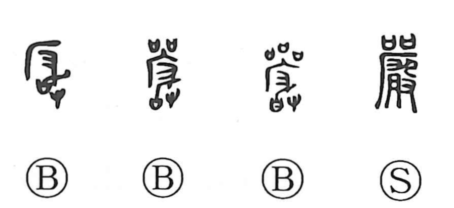

巌

Kun: iwa, iwao | On: gan
crag ・ rocky cliff
Explanation
In early script, 嚴 portrays a sacred rite carried out at a cliff: the cliff sign 厂, together with the act of ladling out fragrant libation wine to purify the site, and paired covenant receptacles set out to receive written prayers. Through this solemn invitation of the deities, the word came to embody reverence and strictness. With the mountain element added, it becomes 巌, naming the rocky crag itself—the place where such awe-filled ceremonies were conducted—hence the sense of a crag or precipitous cliff.